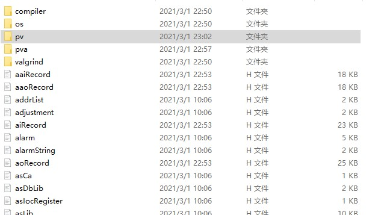
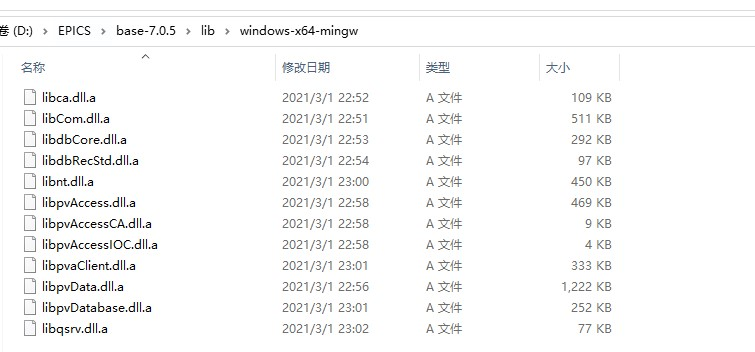

VScode+cmake构建EPICS C++编译环境
# VScode+cmake 构建 EPICS C++ 编译环境
# 编译环境和所需组件
系统信息：Win10 64 位
| Packages | Source | FUNC | Docs |
|---|---|---|---|
| EPICS base-7.0.5 | Official link | EPICS base | pvAccess C++ |
| Visual Studio Code for windows | Official link | IDE | For C++ |
| CMake 3.19.3 | Official link | C++ tools | For C++ |
| mingw64 | Official link | Complier | Cygwin |
说明:
- VS Code 安装所需的 C++ 和 CMake Tools 的插件
- EPICS base 在 Win10 上的编译参考 EPICS 在 win10 和 linux 上的安装与测试
- gcc 和 g++ 版本：8.1.0
# EPICS base 的头文件和库文件位置
| Name | PATH |
|---|---|
| EPICS_BASE_DIR | D:/EPICS/base-7.0.5/ |
| EPICS_LIB_DIR | D:/EPICS/base-7.0.5/lib/windows-x64-mingw |
- 顺利编译 EPICS base 后的 base 文件夹下， include 和 lib 两个子文件夹里就是所需的头文件和动态链接库文件.
- include 文件夹结构目录 
1. compiler/gcc 里面 包括了编译时编译器的依赖头文件： compilerSpecific.h
2. os/WIN32 文件夹里面包含了操作系统的依赖头文件
3. pv 文件夹里为 Process Variable 相关的操作依赖头文件
4. pva 文件下为 pvAccess 的依赖头文件
- lib 文件夹结构目录

# CMakeLists.txt 编写
CMakeLists.txt 里面基础的部分可以通过 VS code 的 CMaketools 插件自动生成。
关于 EPICS base 的部分如下：
需要手动更改 EPICS base 和 Lib 文件的位置
1 | # EPICS base directory |
# EPICS pvAccessCPP C++ API 测试
EPICS base 的 C++ API 接口有 pvDataCPP、pvAccessCPP, 分别用于数据读取和 channel 访问。
API 文档
演示代码来自 pvAccessCPP api 文档里的 Simple Client Get Example
1 |
|
在 VS code 里面 build，编译通过后，启动 EPICS，运行程序，访问一个 PV 变量 $(PVhostName):ai1，结果如下：
1 | PS I:\Coding\EPICS_coding\PVget\build> ."I:/Coding/EPICS_coding/PVget/build/PVget.exe" |
# 后记
纪念 EPICS 的主要开发者之一老爷子–Marty Kraimer
偶然在 EPICS 官网的 tech talk 看到了个帖子，才发现他是 EPICS 的早期开发者之一，30 多年奋战在一线，上面的 pvDataCPP 和 pvAccessCPP 的也是他开发的，他的 Github 主页上显示直到 2021 年 10 月 8 岁的 Marty 仍然还在提交 commit，令人钦佩。RIP RIP
- “A Tribute to our Colleague Marty Kraimer”
Forgive the non-technical email. Marty passed away recently. As Marty has provided immeasurable support to this community, this seems like the most appropriate way to let everyone know. He was dedicated to building a collaboration on a code base - before there were any text books or scholarly papers or even a name for it - that was open-source. He was a prolific coder, open to help and take help from others. He was meticulous in the production of robust code that many would depend on to operate their facilities. Making mistakes and fixing them is great for making heroes. Making code that everyone depends on and no one ever notices is the work of an outstanding engineer. Marty was an outstanding engineer and he was tireless in this pursuit. He laid waste to many a keyboard with his pounding style. His contributions are fundamental to all of our successes. Have a beer to our colleague, benefactor and friend —